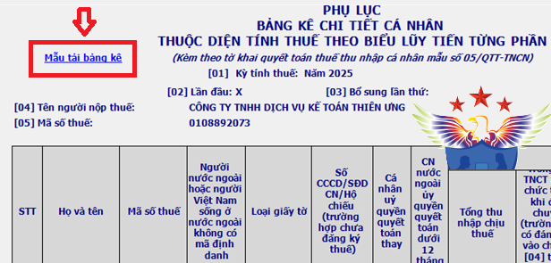
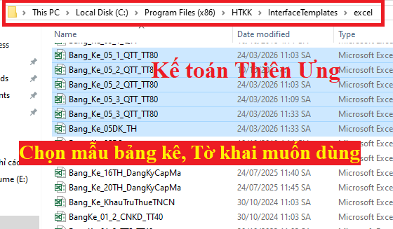
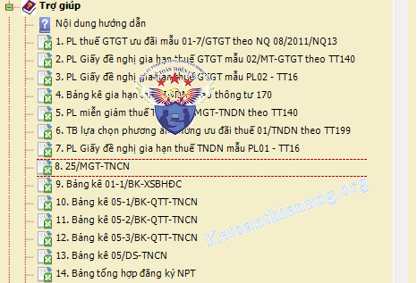
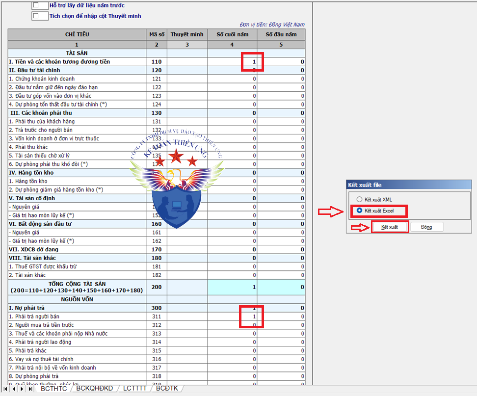
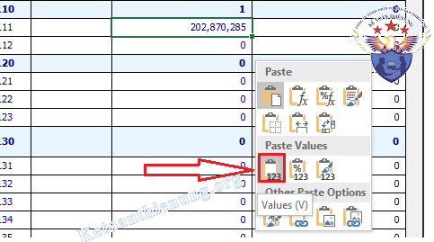
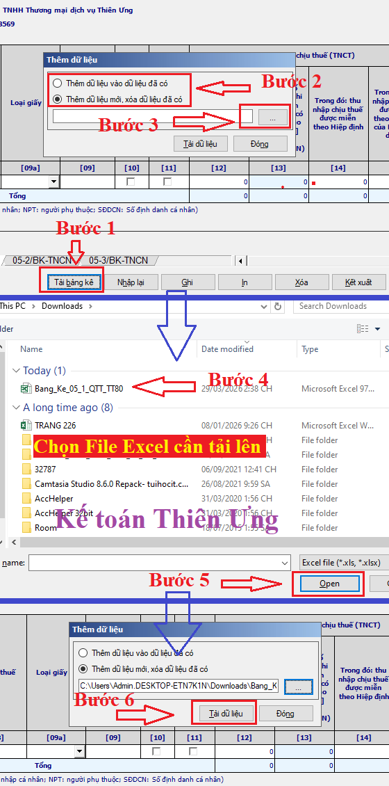
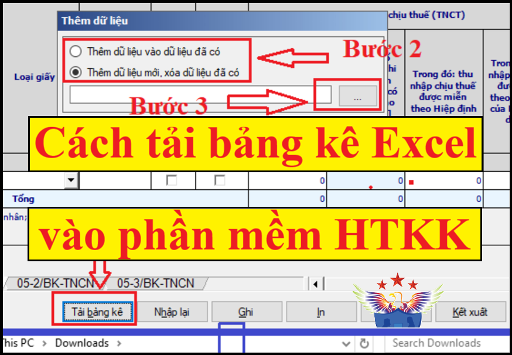

Cách tải bảng kê từ Excel vào phần mềm HTKK: Cách tải file Excel vào HTKK; Cách đẩy BCTC từ Excel vào HTKK; Cách tải bảng kê Quyết toán thuế TNC, bảng kê Excel người phụ thuộc vào HTKK…
Điều kiện để tải file Excel vào HTKK như sau:
- File Excel tải lên HTKK phải là file mẫu CHUẨN của phần mềm HTKK thì mới tải lên được.
- Lưu tên file Excel đó không dấu (VD: Bang_Ke_05_1_QTT_TT80)
- Trước khi tải lên HTKK thì phải đóng file Excel đó lại.
=> Nếu không làm đúng và đủ các điều kiện như trên, thì không tải lên được nhé các bạn.
Sau đây Kế toán Diệu Tâm xin hướng dẫn cụ thể các bước như sau:
-----------------------------------------------------
Bước 1: Cách tải file Excel Chuẩn từ HTKK về máy tính:
Lưu ý: Tuỳ từng loại Mẫu bảng kê, Tờ khai khác nhau -> Mà cách tải file Excel Chuẩn từ HTKK về máy tính cũng khác nhau nhé (Có Mẫu tải được, có mẫu không tải được nhé, không phải Bảng kê, tờ khai, báo cáo nào cũng tải được đâu nhé) -> Các bạn lựa chọn 1 trong các cách dưới đây nhé:
Cách 1: Vào trực tiếp Tờ khai, bảng kê cần tải trên phần mềm HTKK:
- Mở phần mềm HTKK -> Vào Tờ khai hoặc bảng kê cần tải -> Bấm vào: "Mẫu Bảng kê Excel"
Ví dụ: Muốn tải bảng kê 05-1/BK-TNCN kèm theo Tờ khai Quyết toán thuế TNCN 05-QTT-TNCN:
- Vào “Tờ khai Quyết toán thuế TNCN 05-QTT-TNCN” -> Vào “Bảng kê 05-1/BK-TNCN” -> Bấm vào "Mẫu Bảng kê Excel" ở góc trên bên trái để tải về máy tính, như hình dưới:

Các mẫu bảng kê khác như: 05-2/BK-TNCN hay Bảng tổng hợp đăng ký người phụ thuộc … Các bạn cũng tải về tương tự như trên nhé.
-----------------------------------------------------
Cách 2: Vào Ổ C trên máy tính để lấy Mẫu bảng kê Excel:
a) Nếu là Win 8 và Win 10:
- Vào ổ C -> Program Files (x86) -> HTKK -> InterfaceTemplates -> excel -> Chọn bảng kê (Phụ lục) muốn kê khai -> Copy.

- Vào ổ C - > Program Files -> HTKK -> Interface Templates -> excel -> Chọn bảng kê (Phụ lục) muốn kê khai -> Copy.
-----------------------------------------------------
Cách 3: Vào mục “Trợ giúp” trên phần mềm HTKK:
- Đăng nhập vào phần mềm HTKK -> vào mục “Trợ giúp” -> Chọn Mẫu bảng kê cần tải (bấm chuột trái vào đó là xong), cụ thể theo hình dưới:

-----------------------------------------------------
Ví dụ: Muốn tải file Excel Báo cáo tài chính chuẩn HTKK về máy tính.
- Các bạn vào mục “Báo cáo tài chính” -> Chọn bộ Báo cáo tài chính áp dụng cho DN mình (Ví dụ Bộ báo cáo tài chính năm theo Thông tư 133), thì các bạn bấm vào đó.
- Tiếp đó các bạn nhập tạm số liệu (ví dụ nhập 1 vào phần “Tài sản” và “Nguồn vốn”), mục đích là để phần mềm nhận dạng là Tờ khai đúng -> Thì mới kết xuất được nhé (Dữ liệu sai thì phần mềm HTKK sẽ không cho kết xuất)
-> Tiếp đó các bạn bấm vào mục “kết xuất” => Chọn dạng “Kết xuất Excel” (Nhớ là chọn đường dẫn lưu file nhé, nên để ở màn hình desktop hoặc thư mục chứa dữ liệu sổ sách lên BCTC).

Xem thêm: Mẫu thuyết minh báo cáo tài chính
Như vậy là các bạn đã tải được file mẫu Báo cáo tài chính chuẩn của HTKK về máy tính rồi, tiếp đó các bạn copy paste dữ liệu vào file Excel đó.
-----------------------------------------------------
Bước 2: Copy paste dữ liệu vào file Excel chuẩn của HTKK:
- Trường hợp các bạn gõ tay số liệu vào, hoặc copy paste dữ liệu không có công thức (hàm Excel) vào thì không sao nhé.
- Trường hợp là copy paste dữ liệu mà có công thức (hàm Excel) => thi Khi paste dữ liệu vào file Excel chuẩn, các bạn bạn phải chọn dạng là paste giá trị (tức là Paste Values) -> Để loại bỏ hàm đó đi -> Chỉ lấy giá trị thôi.
- Nếu mà các bạn paste mà có hàm hoặc không đúng định dạng của Excel chuẩn HTKK thì không tải lên được đâu nhé (Nên bước này là rất quan trọng nhé).

=> Sau khi đã tải được số liệu lên File Excel đó -> Các bạn Tải lên phần mềm HTKK như sau.
-----------------------------------------------------
Bước 3: Cách tải file Excel vào HTKK:
- Trước khi tải lên các bạn nhớ là: Lưu tên file Excel đó không dấu (VD: Bang_Ke_05_1_QTT) và phải đóng file Excel đó lại nhé.
Cách tải bảng kê từ Excel vào phần mềm HTKK như sau:
- Vào Tờ khai hoặc Phụ lục bảng kê muốn tải lên -> Bấm "Tải bảng kê" -> Chọn nơi lưu file Excel vừa làm xong -> Bấm chọn File Excel bảng kê muốn tải lên, chi tiết xem hình dưới:

Như vậy là các bạn đã tải xong file Excel vào phần mềm HTKK.
-------------------------------------------------------------
Kế toán Diệu Tâm chúc các bạn thành công!
Các bạn muốn học cách kê khai thuế tháng/quý, cách xác định chi phí được trừ - không được trừ, cách lập Tờ khai quyết toán thuế cuối năm … có thể tham gia: Khoá học kế toán thuế thực tế chuyên sâu.
-----------------------------------------------------
Kế toán Diệu Tâm chúc các bạn thành công!
Các bạn muốn học cách kê khai thuế tháng/quý, cách xác định chi phí được trừ - không được trừ, cách lập Tờ khai quyết toán thuế cuối năm … có thể tham gia: Khoá học kế toán thuế thực tế chuyên sâu.
-----------------------------------------------------
